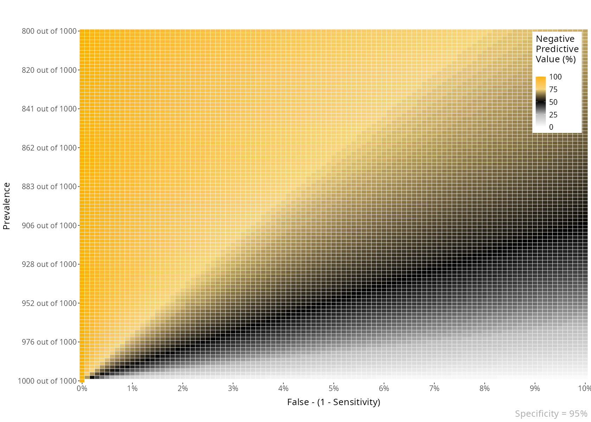
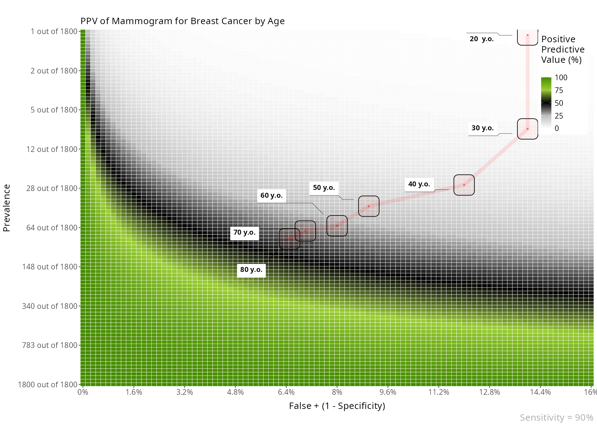
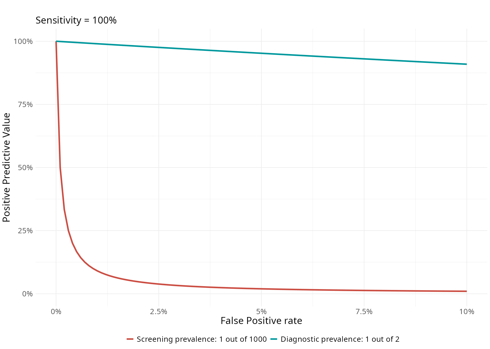

Introduction to BayesianReasoning
Gorka Navarrete
2020-06-28
Source:vignettes/introduction.Rmd
introduction.RmdBayesian reasoning in medical contexts
This package includes a few functions to plot and help understand Positive and Negative Predictive Values, and their relationship with Sensitivity, Specificity and Prevalence.
- The Positive Predictive Value of a medical test is the probability that a positive result will mean having the disease. Formally p(Disease|+)
- The Negative Predictive Value of a medical test is the probability that a negative result will mean not having the disease. Formally p(Healthy|-)
The BayesianReasoning package has three main functions:
- PPV_heatmap(): Plot heatmaps with PPV or NPV values for the given test and disease parameters.
- PPV_diagnostic_vs_screening(): Plots the difference between the PPV of a test in a diagnostic context (very high prevalence; or a common study sample, e.g. ~50% prevalence) versus a screening context (lower prevalence).
- min_possible_prevalence(): Calculates how high should the prevalence of a disease be to reach a desired PPV given certain test parameters.
If you want to install the package can use: remotes::install_github("gorkang/BayesianReasoning"). Please report any problems you find in the Issues Github page.
There is a shiny app implementation with most of the main features available.
PPV_heatmap()
Plot heatmaps with PPV or NPV values for a given specificity and a range of Prevalences and FP or FN (1 - Sensitivity). The basic parameters are:
- Min_Prevalence: Min prevalence in y axis. “Min_Prevalence out of y”
- Max_Prevalence: Max prevalence in y axis. “1 out of Max_Prevalence”
- Sensitivity: Sensitivity of the test
- Max_FP: FP is 1 - specificity. The x axis will go from FP = 0% to Max_FP
- Language: “es” for Spanish or “en” for English
PPV_heatmap(Min_Prevalence = 1, Max_Prevalence = 1000, Sensitivity = 100, Max_FP = 2, Language = "en")

NPV
You can also plot an NPV heatmap with PPV_NPV = “NPV”.
PPV_heatmap(PPV_NPV = "NPV", Min_Prevalence = 800, Max_Prevalence = 1000, Sensitivity = 80, Max_FP = 5, Language = "en")

Area overlay
You can add different types of overlay to the plots.
For example, an area overlay showing the point PPV for a given prevalence and FP or FN:
PPV_heatmap(Min_Prevalence = 1, Max_Prevalence = 1200, Sensitivity = 81, Max_FP = 5, label_subtitle = "Prenatal screening for Down Syndrome by Age", save_plot = FALSE, overlay = "area", overlay_labels = "40 y.o.", overlay_position_FP = 4.8, overlay_prevalence_1 = 1, overlay_prevalence_2 = 68)

Line overlay
Also, you can add a line overlay highlighting a range of prevalences and FP. This is useful, for example, to show how the PPV of a test changes with age:
PPV_heatmap(Min_Prevalence = 1, Max_Prevalence = 1800, Sensitivity = 90, Max_FP = 15, label_subtitle = "PPV of Mammogram for Breast Cancer by Age", overlay = "line", overlay_labels = c("80 y.o.", "70 y.o.", "60 y.o.", "50 y.o.", "40 y.o.", "30 y.o.", "20 y.o."), overlay_position_FP = c(6.5, 7, 8, 9, 12, 14, 14), overlay_prevalence_1 = c(1, 1, 1, 1, 1, 1, 1), overlay_prevalence_2 = c(22, 26, 29, 44, 69, 227, 1667)) #> > 1 overlay

Another example. In this case, the FP is constant across age:
PPV_heatmap(Min_Prevalence = 1, Max_Prevalence = 1200, Sensitivity = 81, Max_FP = 5, label_subtitle = "Prenatal screening for Down Syndrome by Age", overlay = "line", overlay_labels = c("40 y.o.", "35 y.o.", "30 y.o.", "25 y.o.", "20 y.o."), overlay_position_FP = c(4.8, 4.8, 4.8, 4.8, 4.8), overlay_prevalence_1 = c(1, 1, 1, 1, 1), overlay_prevalence_2 = c(68, 249, 626, 946, 1068)) #> > 1 overlay

PPV_diagnostic_vs_screening()
In scientific studies developing a new test for the early detection of a medical condition, it is quite common to use a sample where 50% of participants has a medical condition and the other 50% are normal controls. This has the unintended effect of maximizing the PPV of the test.
This function shows a plot with the difference between the PPV of a diagnostic context (very high prevalence; or a common study sample, e.g. ~50% prevalence) versus that of a screening context (lower prevalence).
PPV_diagnostic_vs_screening(Max_FP = 10, Sensitivity = 100, prevalence_screening_group = 1000, prevalence_diagnostic_group = 2)

min_possible_prevalence()
Imagine you would like to use a test in a population and want to have a 98% PPV. That is, IF a positive result comes out in the test, you would like a 98% certainty that it is a true positive.
How high should the prevalence of the disease be in that group?
min_possible_prevalence(Sensitivity = 100, FP_test = 0.1, min_PPV_desired = 98)
To reach a PPV of 98 when using a test with 100 % Sensitivity and 0.1 % False Positive Rate, you need a prevalence of at least 1 out of 21
Another example, with a very good test, and lower expectations:
min_possible_prevalence(Sensitivity = 99.9, FP_test = .1, min_PPV_desired = 70)
To reach a PPV of 70 when using a test with 99.9 % Sensitivity and 0.1 % False Positive Rate, you need a prevalence of at least 1 out of 429